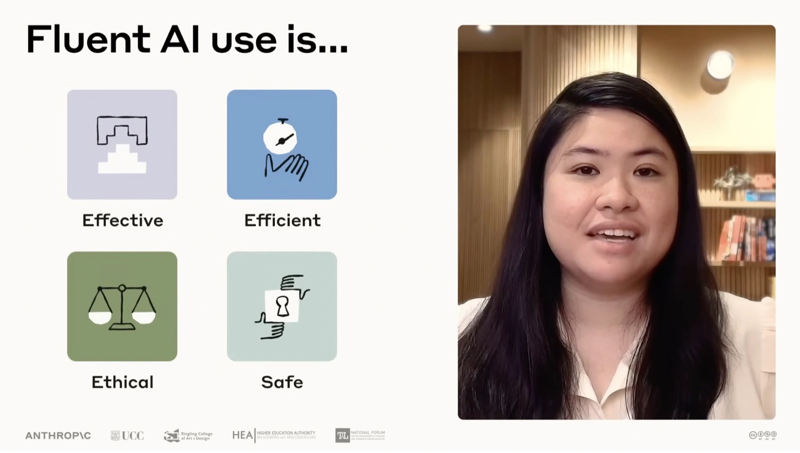
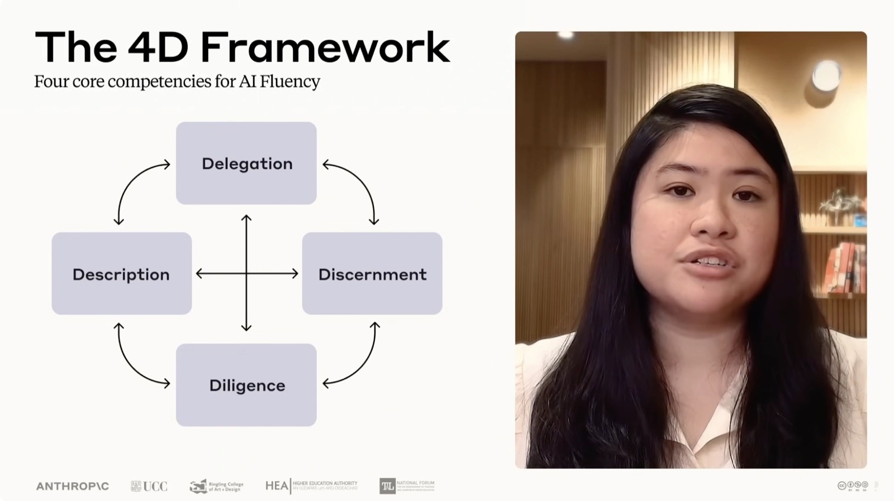
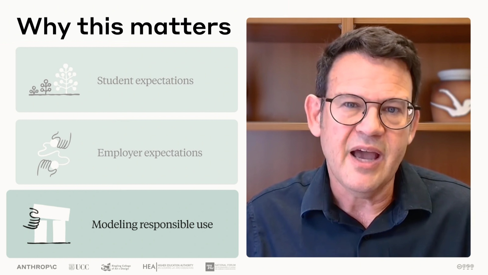

教育者たちが同じく抱えていた問い
「AI Fluency for Educators へようこそ」という挨拶とともに、4人の話者が順に名乗る——Zoe、Rick Dakan、Maggie Vo、Joe Feller。このコースが扱うのは実践のなかの AI fluency、とりわけ自分たちの教育実践における AI fluency だと告げられる。
コースは、教育者たちとの会話から生まれた。誰もが同じ問いと格闘していた、と語られる。
AI を、効果的・効率的・倫理的・安全に、そして何より実際に学生の学びに役立つ形で、自分たちの教育に持ち込むにはどうすればいいのか。
— How do we bring AI into our teaching in ways that are effective, efficient, ethical, and safe, and most importantly, actually help our students learn?

Fluent AI use is… として Effective / Efficient / Ethical / Safe の4つが並ぶ。続けて、この動画で扱う4点が予告される。
- このコースに何を期待できるか
- なぜ今それが重要なのか
- 前提条件
- AI fluent な教育者になることについての考え
4D を「教育者としての役割」で使う
このコースの核心は、基礎コースで扱われた AI Fluency フレームワークを適用することにある。委任力（Delegation・「委任」とも訳される）、記述力（Description・「記述」とも訳される）、評価力（Discernment・「識別」とも訳される）、倫理的責任（Diligence・「誠実さ」とも訳される）——この 4D を、教育者としての役割のなかでどう使うかを探っていく。

The 4D Framework / Four core competencies for AI Fluency。Delegation・Description・Discernment・Diligence が矢印で互いに結ばれている。そのうえで、AI が自分にとっての思考のパートナー（thinking partner）になりうることが語られる。コースを設計し、学習教材を作り、意味のある課題と評価を組み立てる——その手助けをする相手としての AI である。そして同じくらい重要なこととして、この技術とのバランスを保つことも扱う、と念を押される。
コースを終える頃には、AI を使って次の3つができるようになる、と示される。
自分の前提を問い直す
AI を使って、自分が当たり前としてきた仮定に揺さぶりをかける。
教科内容を新しい視点で見る
扱っている題材を、これまでとは違う角度から捉え直す。
個別化された学習体験をつくる
学生一人ひとりにより合った学びの体験を作る。
なぜ教育で AI fluency が重要なのか
AI は急速に教育の風景の一部になりつつある。ここで挙げられる理由は3つ。
学生はすでに AI を使っている
こちらの準備ができていようがいまいが、という言い方がされる。
雇用主の期待が上がっている
卒業生が AI と流暢に働けることを、雇用主がますます期待するようになっている。
教育機関が統合の方法に苦慮している
世界中の教育機関が、これらの技術をどう責任を持って統合するかと格闘している。

Why this matters。Student expectations / Employer expectations / Modeling responsible use の3項目。手本を示せる立場にいる
ここで話者が交代し、教育者の側の機会が語られる。私たち教育者には、次の世代が AI とどう関わるかを形づくる機会がある。思慮深く批判的な関与とはどういうものか、その手本を示すことができる。そして学生に、AI と「関わる」ことだけでなく、AI と賢く一緒に働くことを教えられる。
それはすべて、私たちから始まる。プレッシャーはないよ。
— It all starts with us. No pressure.
問いはもう「入るかどうか」ではない
いま問われているのは、AI が教育の一部になるかどうかではない。問いは、それが学びの体験を損なうのではなく高めるものになるよう、どう保証するかである。そしてそこに、受講者自身が関わってくる。
コースを終える頃には、4D を日々の教育実践に適用できるようになる。その道筋は2段階で示される。
-
コース設計とレッスン計画
AI がコース設計とレッスン計画をどう支えられるかを探るところから始める。より一貫性があり、包摂的で、引き込まれる学習体験を組み立てられるようにする。
-
教材の作成
次に、ハンドアウトから課題、評価にいたるまでの教材作成を扱う。自分の teaching vision（教育のビジョン）と academic integrity（学術的誠実性）を保ったまま行う方法を見る。
さらに、自分の所属機関でこうした議論をリードする自信が身につき、学生に対して責任ある AI との関わり方の手本を示せるようになる。そして最も重要なこととして、自分にとって本物だと感じられるアプローチ（an approach that feels authentic to you）を築くことが挙げられる。
前提条件と、姉妹コース
このコースは、Anthropic Academy で公開されている AI Fluency: Framework & Foundations コースの上に直接構築されている。まだ受けていない場合は、先にそちらで中核となる概念に慣れておくことが推奨される。4D フレームワークはこのコース全体を通じて繰り返し参照されるためである。
その基礎コースは、本サイトでは AI活用力（AI Fluency） として収録している。4D の各能力を1つずつ掘り下げる回があるので、先に読んでおくと本コースの前提が揃う。次の 02 AI Fluency フレームワークの復習 は、その要点をひととおりおさらいする回にあたる。
あわせて、姉妹コースも作られていることが案内される。ひとつは学生に AI fluency フレームワークを教えるためのコース、もうひとつは学生自身のためのコース。自分の AI fluency の実践を築いていくうえで役に立つかもしれない資料として紹介される。
より良い問いを立てられるようになること
締めくくりでは、まず正直な前置きが置かれる。AI 技術がどこへ向かうのか、誰も正確には知らない。私たちは皆それを一緒に考えている最中であり、そのことはむしろかなり解放的（quite liberating）だ、と語られる。
AI fluency フレームワークは、一晩で専門家になることではない。AI で拡張された世界で、より良い問いを立てられるようになることだ。
— It's about learning to ask better questions in an AI enhanced world.
AI fluent な教育者——教育的価値観を中心に据えたまま、AI アシスタントと思慮深く関われる教育者——になることで、学生とともに、次に来るものが何であれ、より良く舵を取れるようになる。「では、始めよう」と結ばれる。
要点整理（公式コース本文より）
ここまでのセクションは動画のトランスクリプトに基づく。以下は公式 Academy のレッスンページ本文（Key takeaways・Exercises・Lesson reflection）に基づく整理で、動画そのものの発言ではない。
-
4D は思考のパートナーシップを築く土台になる
4D フレームワークは教育的誠実さを基盤として、教育者が AI との真の思考パートナーシップを築くのに役立つ。
-
コンテキスト構築は不可欠
AI は特定の状況・価値観・制約を理解することでより有用になるため、コンテキストの構築が欠かせない。
-
置き換えるのではなく強化する
教育者にとっての AI フルエンシーとは、教育と学習における人間の専門知識と判断力を置き換えるのではなく強化することを意味する。
ここから先は動画ではなく、Anthropic 公式 Academy のレッスンページの演習（Exercises）が出典。
共有できる教育ビジョンを作る
原題は Building a shared teaching vision、想定所要時間は 30分。公式は「内省を促すのに良い、土台となる演習であり、今後の AI 協働で再利用できる成果物を作るもの」と位置づけている。
-
Part 1: 自己内省（10分）
AI と関わる前に、まず自分の立ち位置を明確にする。
- 自分の中核的な教育観・教育哲学は何か。
- 自分が直面している固有の制約は何か（機関的・技術的・時間的）。
- 自分の学生は典型的にどんな人たちか（背景・課題・目標）。
- 自分が最も価値を置く教育方法・学習体験は何か。それはなぜか。
-
Part 2: 教育的価値観と文脈について話す（25分）
Claude、あるいは自分が選んだ任意の AI アシスタントとの会話を始める。会話の始め方は次のとおり。
- 自分は教育者であり、自分の教育アプローチと文脈の再利用可能な要約を作りたい、と説明する。
- この文書が今後の協働で共通理解を確立するのに役立つことを AI に伝える。
- 自分の教育実践の関連する側面すべてを一緒に考えてほしい、と示す。
- AI に自分をインタビューしてもらうか、あるいは自分から情報を話し始めて「他に何を知ると役立つか」と尋ねるか、どちらでもよい。
- 急がないこと。目的は、重要な文脈を浮かび上がらせる往復の会話にある。
-
カバーすべき領域（AI に探索を手伝ってもらう）
- 自分の専門分野・レベル・具体的に担当しているコース
- 学生が典型的に直面する課題
- 機関の文脈と制約
- 自分の教育哲学と、好んで使う方法
- 自分の教育における日常的な悩みどころ
- AI を自分の実践に統合する目標
- 自分の教育状況の固有な側面
-
会話的に進める
- 一度に全部を共有する必要はない。
- AI にフォローアップの質問をするよう促す。
- 文脈を説明するのに役立つ具体例を共有する（プライバシーと機微なデータに注意する）。
- 考えながら口に出し、進めながら考えを練り直してよい。
-
再利用できる文書にまとめる
- 会話を、今後の AI との会話で共有できる構造化されたコンテキスト文書に統合するよう AI に依頼する。
- 一緒に見直し、足りないものを追加し、誤りがあれば修正する。
- コピーして再利用しやすい形式を求める。
公式の演習も「具体例を共有するときはプライバシーと機微なデータに注意」と明記している。所属機関の規程で AI アシスタントへの入力が制限されている情報がないか、先に確認しておくとよい。
振り返り（公式コース本文より）
あなたの教育実践のどの側面を言葉にするのが最も難しかったですか？
このプロセスを通じて、何がより明確になりましたか？
次のステップ（公式コース本文より）
次のレッスンは 4D フレームワーク——委任・記述・識別・誠実さ——の手短な復習を扱う。公式ページには、すでに AI Fluency: Framework & Foundations コースを受講済みで、その内容に不安がなければ次のレッスンは飛ばしてもよいと書かれている。
原文トランスクリプト（英語・全文）
YouTube の自動生成字幕から取得したもの。話者交代の >> や認識ミス（Rick Dacen など）もそのまま残してある。細部の表記に多少の揺れがある点に注意。
Hello and welcome to AI Fluency for Educators. I'm Zoe. >> I'm Rick Dacen. >> I'm Maggie Vo. >> I'm Joe Feller. >> This course is all about AI fluency in practice, specifically in our teaching practice. It grew out of conversations with educators who are all wrestling with the same question. How do we bring
AI into our teaching in ways that are effective, efficient, ethical, and safe, and most importantly, actually help our students learn? In this video, we'll walk you through what you can expect from this course, why it matters right now, prerequisites, and some thoughts on becoming an AI fluent educator. Let's
dive in. >> At its heart, this course is about applying the AI fluency framework, which was covered in our core course in education. We'll explore how to apply the four Ds of delegation, description, discernment, and diligence in our role
as educators. We'll discuss how AI can become a thinking partner for you, helping design courses, create learning materials, and build meaningful assignments and assessments. Just as importantly, we'll talk about maintaining balance with this
technology. By the end of this course, you'll be able to use AI to challenge your assumptions, to see subject matter in new ways, and create more individualized learning experiences for your students. So, why does AI fluency matter in education? AI is rapidly
becoming part of the educational landscape. Whether we're ready or not, students are already using AI. Employers increasingly expect graduates to work fluently with AI and institutions worldwide are grappling with how to integrate these technologies
responsibly. >> As educators, we have the opportunity to shape how the next generation engages with AI. We can model what thoughtful critical engagement looks like and we can teach our students not just to engage with AI but to work with it
wisely. It all starts with us. No pressure. At this point, the question isn't whether AI will be part of education. It's how we'll ensure it enhances rather than diminishes the learning experience. And that's where you come in. By the end of this course,
you'll be able to apply the 4D framework to your everyday teaching practice. We'll start by exploring how AI can support your course design and lesson planning, helping you develop more coherent, inclusive, and engaging learning experiences. Then we'll look at
creating course materials from handouts to assignments to assessments in ways that maintain your teaching vision and academic integrity. >> You'll develop confidence to lead these conversations at your institution and model responsible AI engagement for your
students. Most importantly, you'll build an approach that feels authentic to you. This course builds directly on the AI fluency framework and foundations course available on Anthropic Academy. If you haven't taken it yet, we recommend
starting there to familiarize yourself with the core concepts before continuing. We'll be referring back to the 4D framework throughout this course. >> By the way, we've also created companion courses on teaching the AI fluency framework to your students as well as a
course design for students themselves. These might be useful resources as you build your AI fluency practice. >> None of us knows exactly where AI technology is headed. We're all figuring this out together, and that's actually quite liberating. The AI fluency
framework isn't about becoming an expert overnight. It's about learning to ask better questions in an AI enhanced world. As an AI fluent educator, one who can engage thoughtfully with AI assistants while keeping pedagogical values at the center, you'll be better prepared to navigate whatever comes next
alongside your students. So, let's get started.